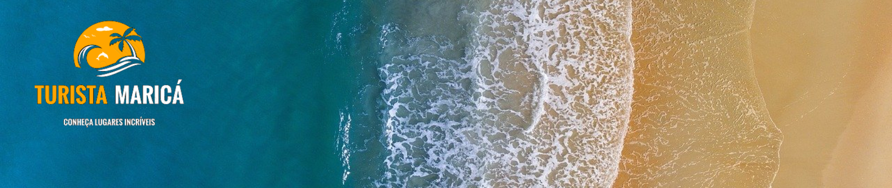

Maricá é um paraíso natural, com 46 quilômetros de praias e rodeada de lagoas, rios, montanhas com cachoeiras e restinga. Isso faz de Maricá o cenário perfeito para quem procura beleza natural e muito sol. O território é dividido em quatro distritos: Maricá (sede), Ponta Negra, Inoã e Itaipuaçu. Sua população é estimada em 150 mil habitantes, segundo levantamento de 2016. Maricá é muito conhecida por suas encantadoras praias, dentre as quais se destacam as praias de Jaconé, Ponta Negra, Barra de Maricá, do Francês e Itaipuaçu. A topografia peculiar cria um ambiente propício à prática de esportes como voo livre, trekking e mountain bike, entre outros. A Área de Proteção Ambiental Estadual de Maricá é uma área tipicamente de restinga, localizada na costa do município. É formada pela antiga fazenda São Bento da Lagoa, a Ponta do Fundão e a Ilha Cardosa. Abriga a Comunidade Pesqueira tradicional de Zacarias, presente na área desde o século XVIII.
A Paróquia de Nossa Senhora do Amparo está situada em uma pequena elevação no núcleo da cidade. A pedra fundamental foi lançada em 1788 e no ano de 1802 o templo era consagrado, embora sua construção se alongasse por muitos mais anos. O campanário só atingiu a altura final na reforma efetuada entre 1948 e 1952, quando o piso original da igreja foi substituído por mármore. A igreja está localizada na Praça Medeiros Corrêa.
Ponto de referência para os antigos navegadores, o Farol de Ponta Negra está incorporado ao patrimônio turístico e cultural da cidade.
Após a revitalização da orla, ocorrida em 2018, Araçatiba virou um dos melhores destinos de Maricá, um
espaço com cerca de 5 Kms iluminado e urbanizado, onde há a prática dos mais diversos esportes, como
vôlei de praia, corrida, futevôlei, entre outros. Durante o percurso da orla é possível encontrar
esculturas, academia ao ar livre e restaurantes e pousadas de altíssima qualidade.
Além disso tudo, o local é utilizado em diversos eventos da cidade, como na comemoração do Natal Iluminado, no festival de bebidas artesanais, o Art & Bier, e também no festival de música FestMar.
Lugar ainda pouco conhecido na cidade. Alguns também chamam de Poção Azul, e a trilha de acesso é um pouco íngreme e escorregadia, mas bem tranquila. Não há muita informação e sinalização para o local, porém, você será recompensado ao chegar no local.
O Pico da Lagoinha é o ponto mais alto de Maricá com 890 metros de altitude. Está localizado na Serra
do Espraiado, próximo às divisas dos municípios de Maricá, Tanguá e Rio Bonito.
| Altura | Tempo de subida | Desnível | Distância | Dificuldade |
| 890m | 3 horas | 850m | 4 Km | Moderado |
© 2020 - Direitos Reservados - Grupo 5
Siga-nos
 Portal
Oficial
Portal
Oficial